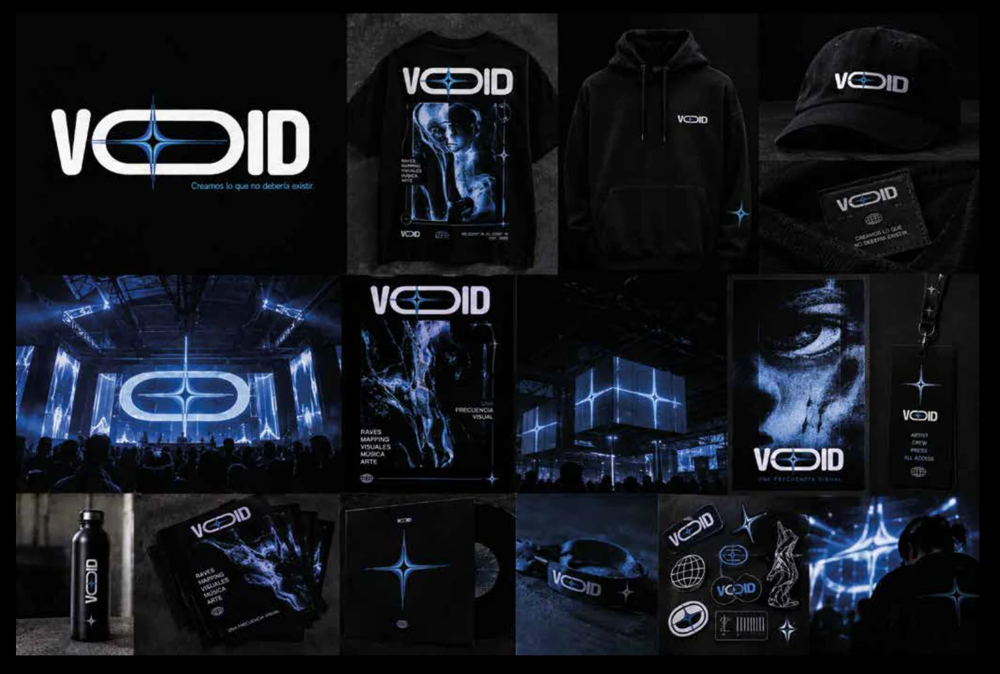
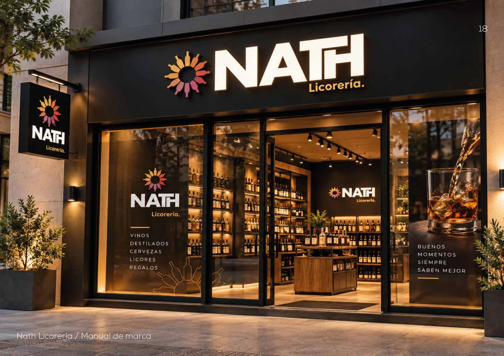
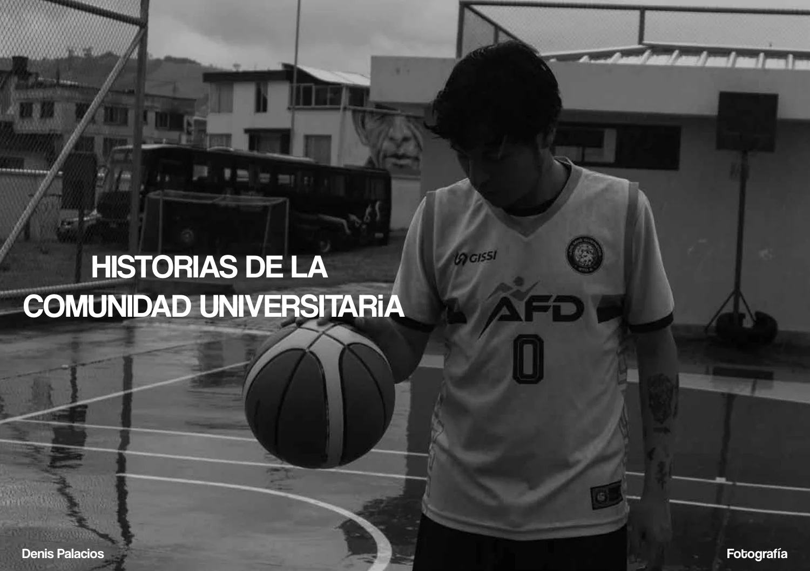
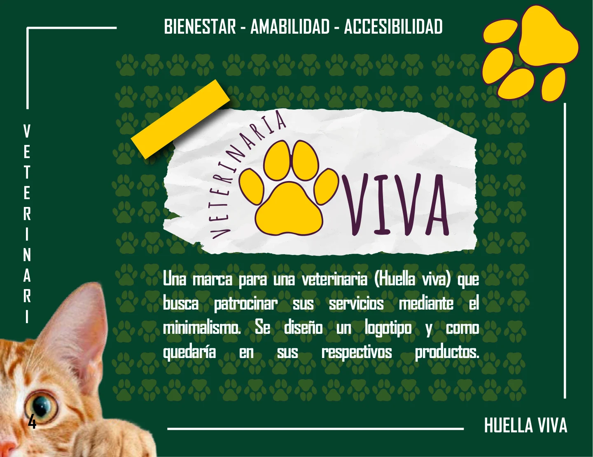
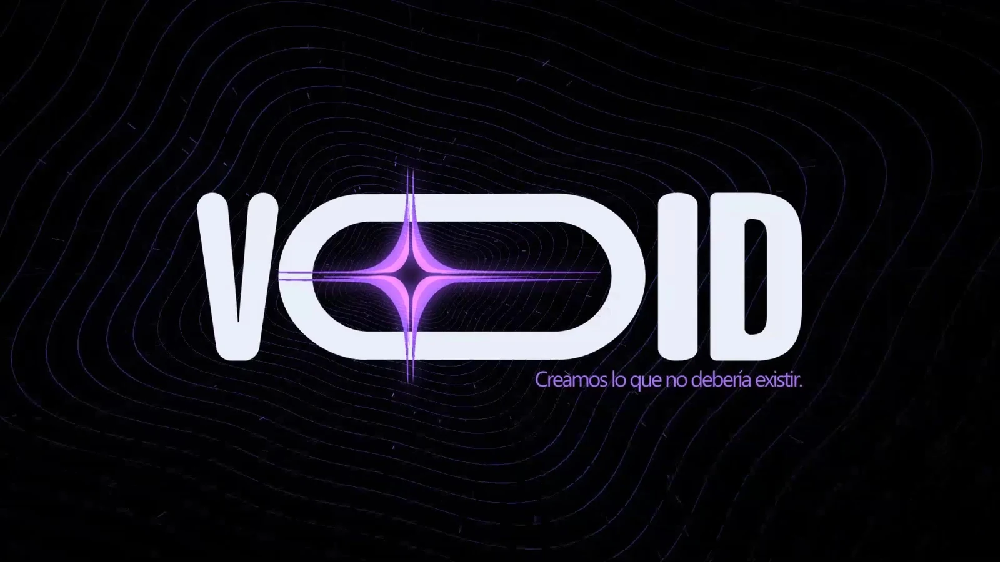
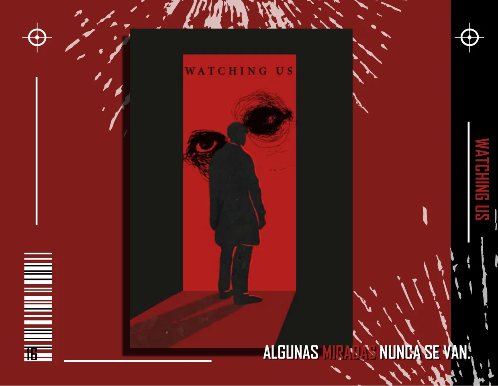
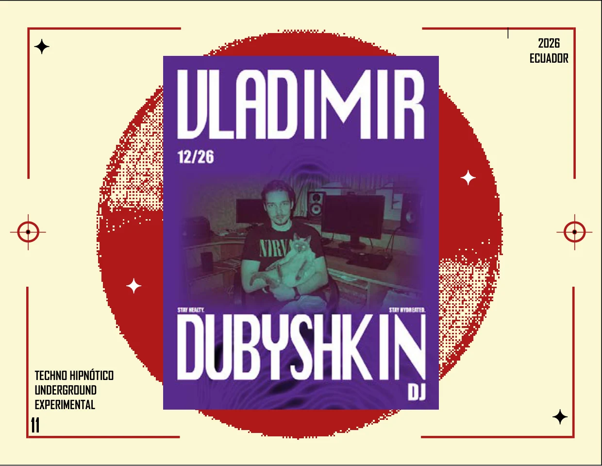
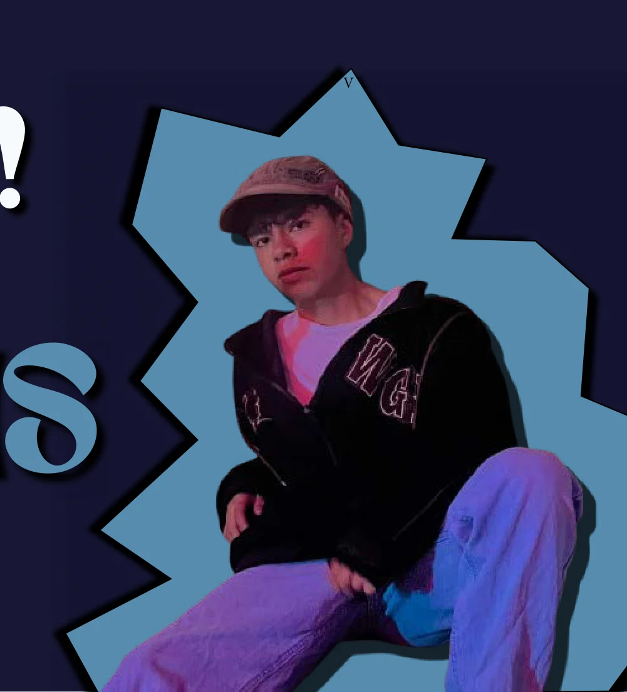

PROYECTO DESTACADO ✳ 01 / 07 — BRANDING VOID ✧ Identidad para una experiencia de techno, arte y visuales. Un universo oscuro, eléctrico y experimental. Identidad visual Dirección de arte 2026 EXPLORAR EL PROYECTO →PORTAFOLIO CREATIVO / 2026
IDEAS QUE
SE SIENTEN.
IMÁGENES
QUE SE QUEDAN
.
Soy Denis Palacios . Diseño identidades, construyo universos visuales y cuento historias a través de la fotografía y el movimiento.
DISEÑO / FOTOGRAFÍA / MOTION
ECUADOR · 00°
DESLIZA PARA EXPLORAR
↓
01
/ TRABAJOS SELECCIONADOS
2026 · EDICIÓN 01
Una selección
de lo que
me mueve.
Cada proyecto tiene su propia personalidad. Aquí se encuentran las ideas que he convertido en piezas visuales, marcas e historias.
MOSTRANDO 07 PROYECTOS
MOSTRANDO 03 PROYECTOS
MOSTRANDO 01 PROYECTO
MOSTRANDO 01 PROYECTO
MOSTRANDO 02 PROYECTOS

02 / 07 NATH Licorería Una marca con carácter, color y personalidad propia.
03 / 07 Fragmentos UPEC Una historia de sueños y metas contada en fotografías.
04 / 07 Huella Viva Diseño cercano, minimalista y con mucha vida.
05 / 07 VIDEO · 00:13 VOID Absorption Loop Una identidad que cobra vida a través del movimiento.
06 / 07 Watching Us Misterio, tensión y narrativa en una cubierta editorial.
07 / 07 Vladimir Dubyshkin Una portada inspirada en la estética del techno.
D
✳
J
02 / DETRÁS DE LOS DISEÑOS
Hola, soy
Denis.
Me gusta crear
sin límites.
Estudio Multimedia y Producción Audiovisual y me apasiona transformar ideas en proyectos visuales. Me interesa el diseño gráfico, la fotografía, la construcción de marcas y todo lo que se puede expresar con imágenes en movimiento.
También me inspira la música electrónica: su ritmo, su energía y la libertad para experimentar. Esa influencia se refleja en buena parte de mi trabajo.
01
Identidad visual
02
Fotografía
03
Motion graphics
04
Diseño editorial
¿Creamos algo?
ESTO ES LO QUE ME MUEVE
EL DISEÑO NO ES SOLO LO QUE VES. ES LO QUE TE HACE SENTIR.
DENIS DJ / VISUAL PHILOSOPHY
03
/ CONTACTO
EL SIGUIENTE PROYECTO PUEDE SER EL TUYO
¿TIENES UNA IDEA EN MENTE?
HAGÁMOSLA
REALIDAD.
✳
Me encantan los proyectos que buscan decir algo diferente. Si tienes una idea, conversemos.
Hablemos por Instagram ↗